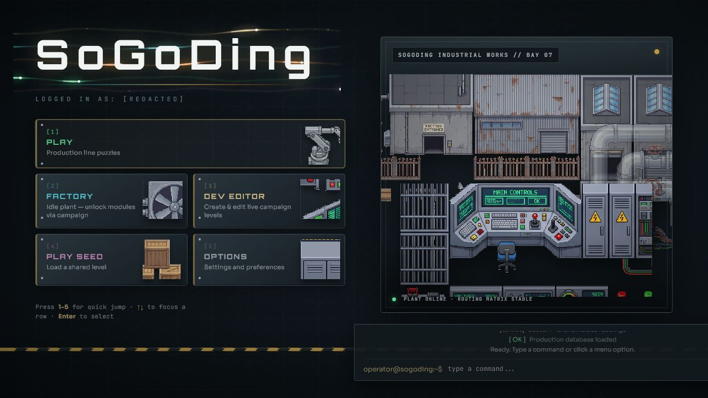
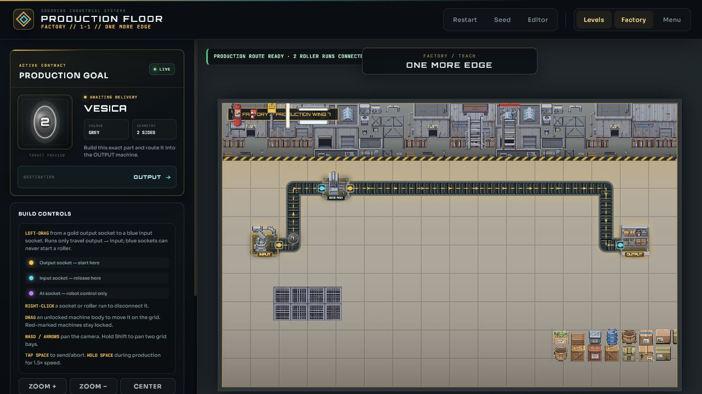
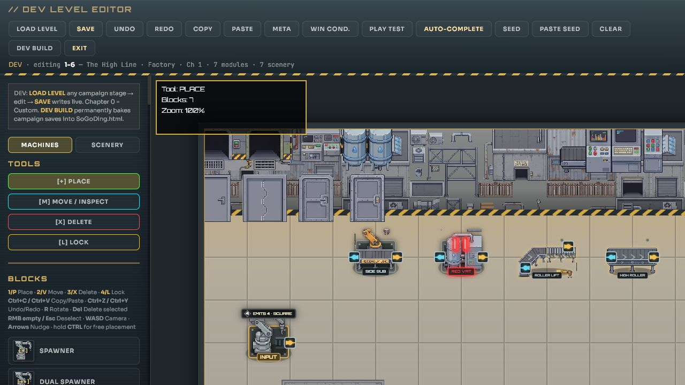
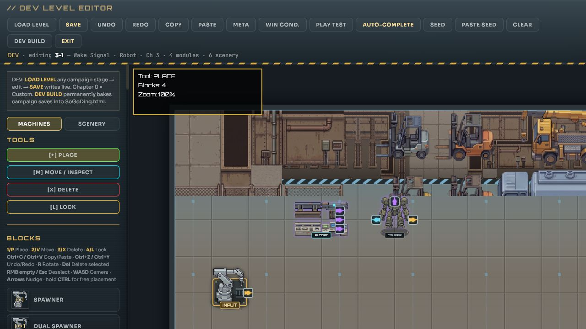

Read the contract
The output wants a precise shape, colour or layered combination. Work backwards and decide what has to happen to the raw part.

Factory puzzle automation
Find out what the factory is hiding.
SoGoDing is a puzzle game about turning an empty factory floor into a working production line. Arrange the machines, connect their sockets with roller routes, and deliver the exact shape and colour the contract demands.
01 // THE JOB
Every stage gives you a production target and a box of machinery. The early jobs teach you how to add sides and mix colours. Before long you are coordinating split lines, elevated rollers, powered equipment and robot crews—all while the factory keeps changing around you.
The output wants a precise shape, colour or layered combination. Work backwards and decide what has to happen to the raw part.
Move the unlocked machinery and connect gold output sockets to blue inputs. Roller lines turn and snap into place as you build.
Start production and watch the part travel. If it reaches the wrong machine—or arrives as the wrong thing—the line is yours to rethink.
02 // PRODUCTION
Stamp on another side. Shave one away. Dye, split, merge, invert, lift and redirect. Machines do exactly what they promise; the challenge is making them work together.

03 // NEW FLOORS
New worlds change more than the wallpaper. Furniture becomes part of the puzzle, elevated lines cross busy floors, and specialised machines open routes that were impossible a few stages earlier.

04 // ROBOT FLOOR
Robots are factory modules too. Link their control network, place them on the floor and use them to carry, stack and dispatch parts between separate production cells.

05 // RECOVERED DATA
The scenery changes. Old journal entries surface. Production records stop making sense. The further you travel, the more it feels like these contracts were left for someone in particular.
“The shapes are only the job. Pay attention to what the factory remembers.”
06 // AFTER THE SHIFT
Campaign victories unlock machinery for Factory mode: a persistent plant where every completed order feeds the next expansion. Save it, rebuild it, and turn a handful of rollers into something enormous.
Production floor available
No installation. No account. Just an empty floor and one more edge.
▶ Start SoGoDing